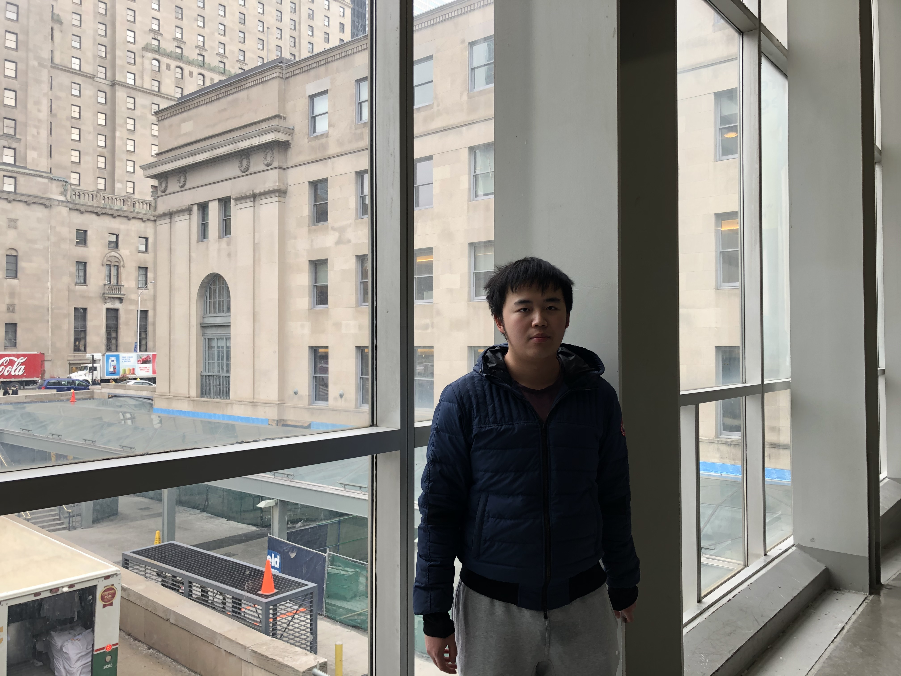

<!DOCTYPE html>
<html>
<meta charset="UTF-8">
<head>
    <link rel="stylesheet" href="font-awesome-4.7.0/css/font-awesome.min.css">
    <link rel="stylesheet" type="text/css"  href="ugly.css"></link>
    <meta name="viewport" content="width=device-width, initial-scale=1.0">
    <title>MyWeb</title>
</head>
<body>
	<header>
</body>
</html>

		<div class = "intro">
			<h2> Mengju Liao</h2>
			<p>4th Year Computing Science Student</p>
		</div>
	</header>

	<div class="sidebar">
		<a href="#">Career</a>
  		<a href="#">Projects</a>
  		<a href="#">Indeed</a>
  		<a href="#" class="right">Conract Info</a>
	</div>
	<div class= "line1"></div>
	<div class="selfInfo">
		<h2>About me</h2>
		<p >
			Mengju Liao is a 4th year computing science undergraduate student at University of Alberta, Canada.
		</p>
		<ul>
			<li>
				I am fluent to speak English, Mandarin and Cantonese.
			</li>
			<li>
				I have interest in exploring in areas of CS including, File and Database Management, Operating System and Website Applications and Architecture.
            </li>
            <li>
                I love volunteering to different organizations, including nursing home and exhibitions.
            </li>
		</ul>
		<h2>
			History
		</h2>
		<h4>
			Website Application Development
		</h4>
		<p>
			•	Accept task from a private group uvlit to develop a climate change calculator. Work with 5 other team members to build a climate change calculator to calculate canbon waste base on comstumers' purchased products.
		</p>
		<h4>
			Android Application Development
		</h4>
		<p>
			•	Work with 5 other team members to build a full functional android application about keep track of users' habits.
		</p>

	</div>
	<div class="basic">
		
		<h2>
			Language learnt
		</h2>
		<ul>
			<li>
				Python
			</li>
			<li>
				C
			</li>
			<li>
				Common lisp
			</li>
			<li>
				Java
			</li>
			<li>
				prolog
			</li>

		</ul>
		<h2>
			Education
		</h2>
		<ul>
			<li>University of Alberta - Specialization in Computering Science minor in business</li>
			<li>Microsoft Web WorkShop</li>
		</ul>
	</div>
</body>
</html>

